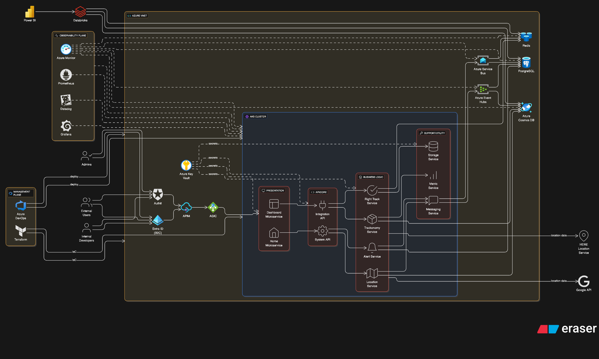

Enterprise AI/ML Platform
Enterprise AI/ML platforms for healthcare, supply-chain, airline, and government clients — LLM/GenAI at scale, 99.99% SLO, zero critical findings across SOC2, HIPAA, and FedRAMP.
50+/day
Zero-downtime deployments
65
GPU platform scale
99.97%
Uptime ML/AI
45→78%
GPU utilization
40+
Apps migrated
-60%
Job queue time
-40%
p99 latency
4
Compliance certs

Azure Infrastructure — Terraform IaC + ArgoCD GitOps
Production AKS — auto-scaling, availability zones, Azure CNI, Istio.
Hub-spoke VNets — Azure Firewall, NSGs, private endpoints, WAF.
Azure AD — RBAC, Managed Identities, Key Vault auto-rotation.
Private-link data — PostgreSQL Flexible, Cosmos DB, Service Bus, Event Hubs.
Prometheus/Grafana + Datadog with custom GPU dashboards.
GitHub Actions → ArgoCD GitOps; Terraform with policy-as-code.
Key Responsibilities
65-GPU multi-tenant platform — Slurm, K8s, Triton; utilization 45→78%.
Databricks crisis — JVM profiling found driver memory leak; failures −95%.
FinOps tooling — real-time cost visibility, rightsizing, spot automation.
Kernel tuning + perf/strace profiling; GPU profiling with dcgm.
SOC2, HIPAA, FedRAMP with zero critical findings.
Infrastructure team built 0→6 engineers with on-call rotations.
Industry Verticals
Technology Stack